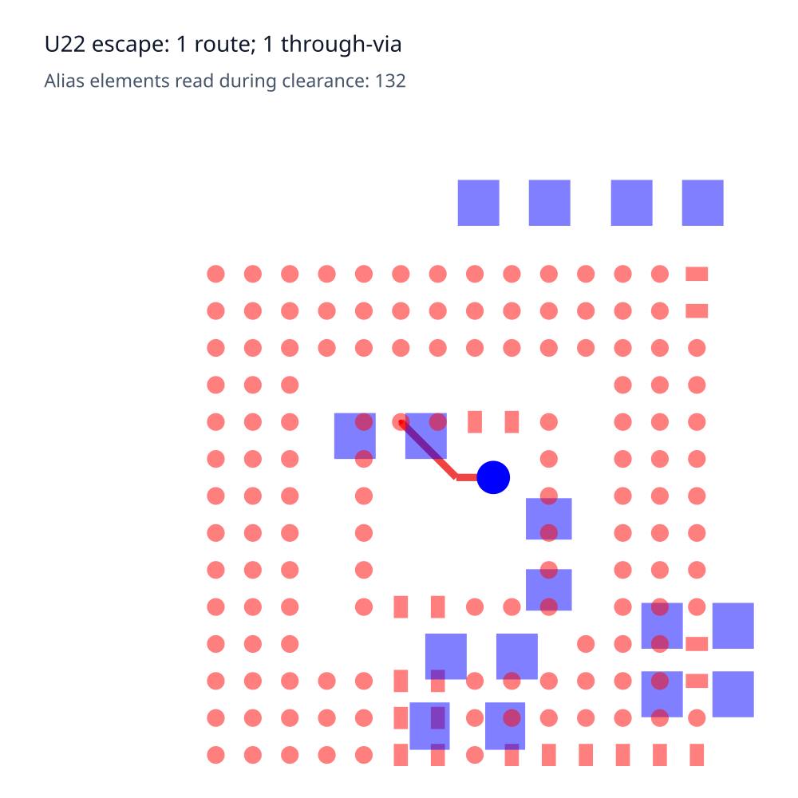

The fix moves the existing exact segment-distance predicate ahead of alias scans. The fresh CPU profile attributes 23.2% of sampled time to those scans. Nearby obstacles retain all ownership, component-body and source-pad exemptions. No new solver, cache or geometry rules.
All six full boards still stop in fanout. Completed boards remain 0/6; DDR bus phases started remain 0/12. The native partial routes below were not accepted into the final PCB.
Three matched native search pairs
Before median, s
After median, s
Reduction
Partial routes
Vias
iCE/Pi CM0 SBC
176.5
115.8
34.4%
7 → 7
7 → 7
i.MX6 Demo Board
197.1
124.8
36.7%
8 → 8
7 → 7
Each scene uses three serial pairs on one Blacksmith worker, alternating order. All repeated native copper hashes match, with zero independent copper DRC issues. These are failed native searches with identical work and partial routes.
Six full-board results, same 600 s routing budget
Board
Best fanout before
Best fanout after
Full elapsed before → after, s
Last assignment/256
OrangeCrab rev 0.2.1 ECP5 DDR3
116/273
118/273
609.4 → 609.4
8 → 19
Allwinner H616 Devboard DDR3
88/174
88/174
604.4 → 604.3
204 → 225
ButterStick r1.0
62/91
62/91
606.5 → 482.4
256 → 256
Glider mainboard
60/95
60/95
622.3 → 359.8
69 → 256
i.MX6 Demo Board
8/32
8/32
418.2 → 498.1
256 → 256
iCE/Pi CM0 SBC
7/32
7/32
280.0 → 259.8
256 → 256
Counts are actual best assignments, including at timeout, and refer to first-region escapes rather than complete nets. Whole-board timings include initialization and run on separate workers. OrangeCrab/H616 still hit the budget. Glider now exhausts 256 assignments rather than stopping after 69.
The first i.MX6 whole-board observation was 418.2 → 498.1 s. Subsequent matched native repeats are 197.1 → 124.8 s. Both observations are retained; native repeats isolate the changed checker. Whole-board completion remains0/6.
Focused native repro: 99.6% fewer alias reads
The captured U22 path uses the original 0.45/0.2 mm through-via and 0.1 mm clearance. The test restores its counters before rendering and DRC and asserts exact copper equality. The stacked fix updates the same SVG count: 33,498 → 132.
Before-only native repro.

After: identical path and via.
Actual complete native U22 search before/after
These are best partial routes from the full-board input: 7/32 escapes, seven vias, zero copper DRC issues in every repeat. Labels show measured three-run medians; geometry is identical.
Fanout31 remains 30/72 solved and 42 timeouts. All 72 inputs, outcomes, routed counts, validated breakouts and via counts match. All 30 solved SVGs are byte-identical. Guard budget: 16 workers/32 Blacksmith vCPUs, 120 s per case. Completed-case unpaired median 46.26 → 46.34 s is separate from matched native timing.
All six full PCB records excluding error entities match. Geometry and net-membership audits have zero errors. Empty full-PCB physical findings reflect zero accepted traces; nonempty native replays and 30 solved guard boards supply the routed-copper checks. Nearby-obstacle controls preserve foreign-pad rejection, exact circular clearance, rotated pads, direct/same-net permissions and terminal-body escapes.
All parts, pads, nets, layers, clearances, via rules and 0.7 mm breakout padding are unchanged. Raw Circuit JSON and CPU profile are losslessly gzipped with uncompressed checksums. Evidence was rebuilt from immutable successful Actions artifacts after the interactive workspace became unavailable.